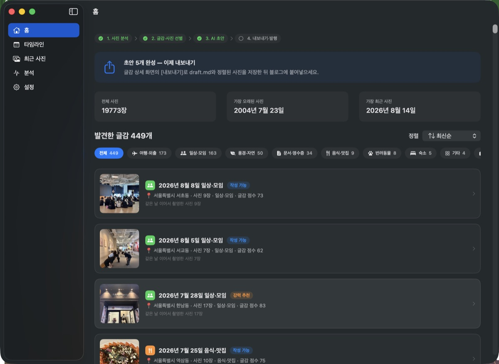
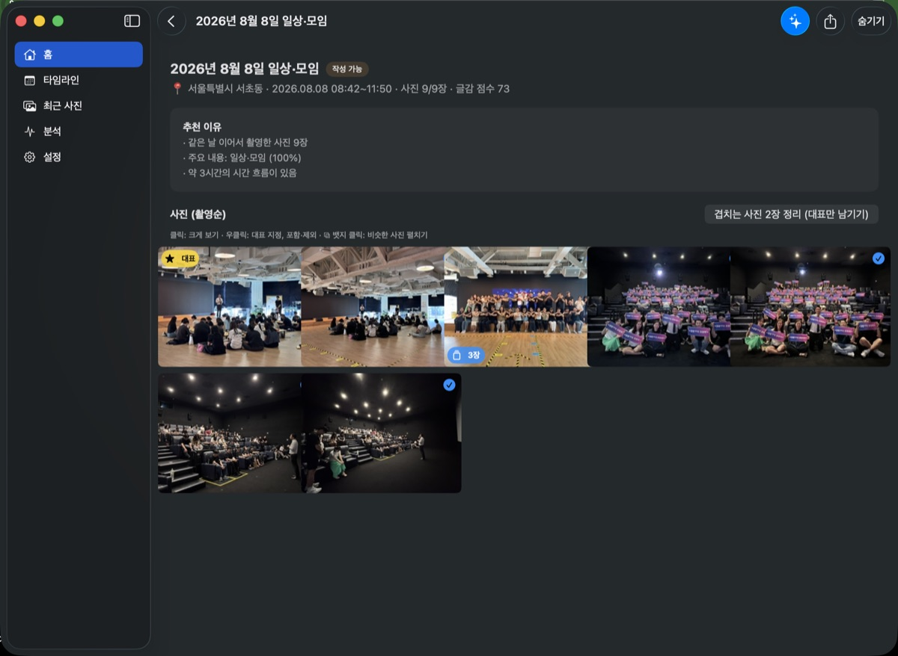
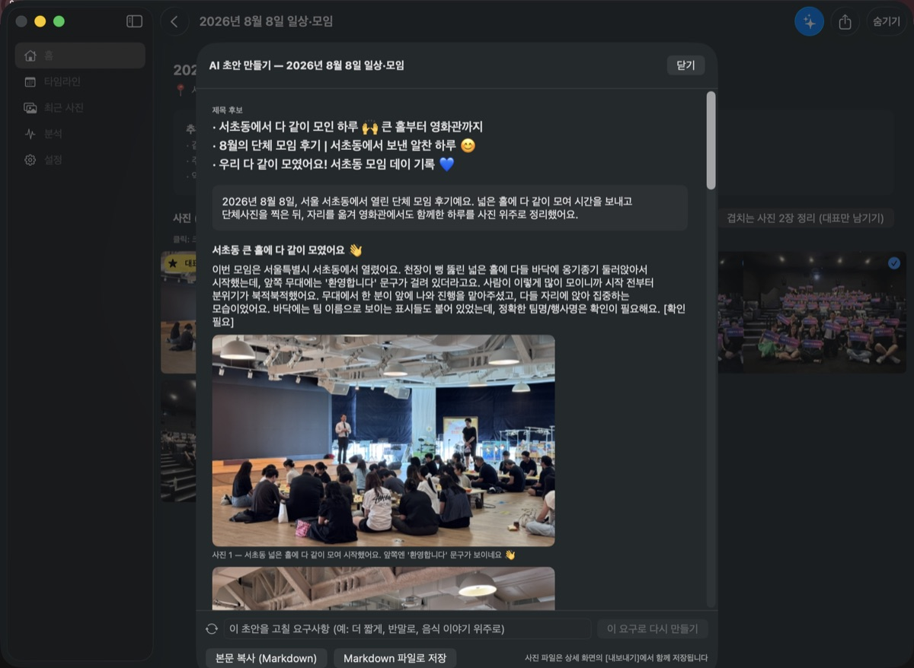
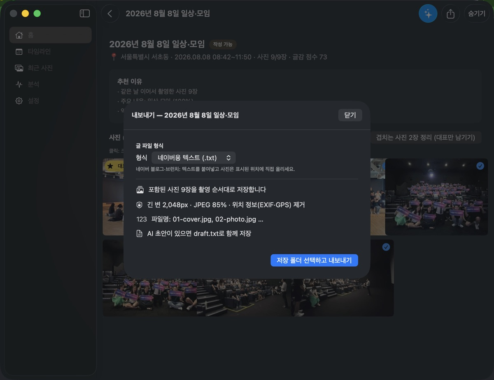

사진이 너무 많은데 뭘 써야 할지 모르겠다면.
맥 사진 보관함에서 글감을 찾아주는 앱, 사진글감.
같은 날 같은 장소에서 이어 찍은 사진을 자동으로 묶고, 여행·맛집·일상 같은 주제로 분류해 “글이 될 만한 묶음”을 골라줍니다. 잊고 있던 여행, 안 올린 맛집, 기록 안 한 모임이 전부 글감이 됩니다.




사진 분류·분석은 전부 이 맥 안에서 실행됩니다(Apple Vision). 개발자 서버도 계정도 없고, 사진 원본을 수정·삭제·업로드하지 않습니다.
AI 초안을 만들 때만, 직접 고른 사진 몇 장의 축소본(위치정보 제거)이 본인이 선택한 AI(Claude·GPT·Gemini)로 전송됩니다. 전송 항목은 실행 전에 안내합니다. → 개인정보 처리방침
Q. AI 연결이 꼭 필요한가요?
아니요. 사진 분석·글감 찾기·선별·내보내기는 연결 없이 전부 쓸 수 있습니다. AI 초안 생성만 본인의 Claude 구독(Claude Code) 또는 Claude·GPT·Gemini API 키가 필요합니다.
Q. 어떤 블로그를 지원하나요?
네이버·티스토리·워드프레스·브런치·인스타그램. 올릴 곳을 고르면 그 에디터에 맞는 형태로 복사되고, 붙여넣기 단계를 화면에서 안내합니다.
Q. 내 사진은 어디로 가나요?
분석은 전부 이 Mac 안에서 끝납니다. AI 초안을 만들 때만, 직접 고른 사진 최대 10장의 축소본(위치정보 제거)이 본인이 선택한 AI로 전송됩니다.